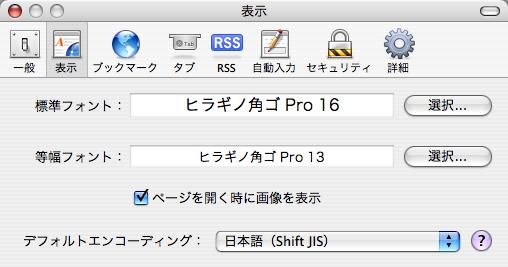

Safari のバグなのか、Gmail のバグなのか・・・。
ずいぶんと前からこの現象に悩まされていたんだけど、どうも改善されません。
ちょっと調べてみたら回避策をみつけました。
・Internet Square - SafariでGmailを見ようとすると固まる
多分、もう解決しているでしょうが、もしもお困りの方がこのログを見つけたら．．．
標準フォントを「ヒイラギ丸ゴシック」にしてみて下さい。
多分嘘みたいに簡単にアクセス出来ます。
それでもダメなら、Prefarences内のcom,apple.safari.plist を取り除き、再起動してから上記を繰り返すとアクセス出来ますよ。
標準フォントを「ヒイラギ丸ゴシック」にしてみて下さい。
多分嘘みたいに簡単にアクセス出来ます。
それでもダメなら、Prefarences内のcom,apple.safari.plist を取り除き、再起動してから上記を繰り返すとアクセス出来ますよ。
ほほぅ。
ヒイラギ丸ゴシックは手元にないんだけれども、ヒラギノ丸ゴシックにしたら動きました。

でもフォントタイプが指定されていないページも丸っこくなってしまうのがちょっと・・・。
ヒラギノ角ゴでも大丈夫だった。こっちの方が好み。
Osaka でも正常に使えるように修正してくれるのが一番なんですが。
返信 |
固定リンク
Re: Safari で Gmail を開くとフリーズする
ほぉ。
これには困っていたけどずっと放置してたよ。
あとで試してみます。
--Hide
投稿者 Anonymous : 2006/03/31 8:32:52 JST
まじ困りますよね。
ブックマークしてないけどまだ読み足りないページとかひらいてて固まられるともう大変・・。
投稿者 裕介 : 2006/03/31 8:40:51 JST
大変タメになる情報、ありがとうございます。
ずっと困ってました（苦笑）。
こんな解決方法があるなんて、、、orz
投稿者 みき : 2006/12/16 15:42:37 JST
お役に立てて幸いです。
設定は戻していないんですが、いまだに直っていないんですね・・・。
投稿者 裕介 : 2006/12/16 20:59:13 JST
ありがとうございます。最近macに乗り換えたのですが、G-Mail使えないの！？となっていたので。大変助かりました。
投稿者 通りすがり : 2007/01/20 14:47:39 JST
すごい！ありがとうございます！
Safariが使えなくなると思って絶望的になってたところだったので。。。
それにしても、なぜOsakaだと駄目なんでしょうか。。。旧来のMacユーザーにとって、OsakaとHelveticaは特別な存在なのにね。。
投稿者 Anonymous : 2007/05/05 22:33:55 JST
ありがとうございます☆
昨日Gmailに登録していきなりSafariでフリーズ！？Safariに慣れてしまっていたのでガックリしてたのですが、一発で解消しました。本当に感謝感謝です！
投稿者 pochi : 2007/08/08 19:53:14 JST
困っていたので、とても助かりました！
ありがとうございます。
投稿者 通りすがり : 2007/10/11 14:40:39 JST
やっぱりまだ直っていないんですねー。
お役に立ててなによりです。
お役に立ててなによりです。
投稿者 Yusuke : 2007/10/11 14:49:25 JST
投稿者 なんちゃって Willcom & MAC Fan : 2007/03/18 16:09:23 JST
http://yusuke.homeip.net/diary/2006/03/30/1143655421242.html
同じ症状の人がいました、
そういえばSafariの環境設定で標準フォントをOsakaにした頃からおかしかった。
そして、ヒラギノにしてみるとすんなりいっちゃった。
何のバグやねん！！
...
続きを読む...
続きを読む...
投稿者 It's masaru of life : 2007/04/29 9:54:49 JST
トラックバックURL http://yusuke.homeip.net/diary/.action?entry=1143655421242